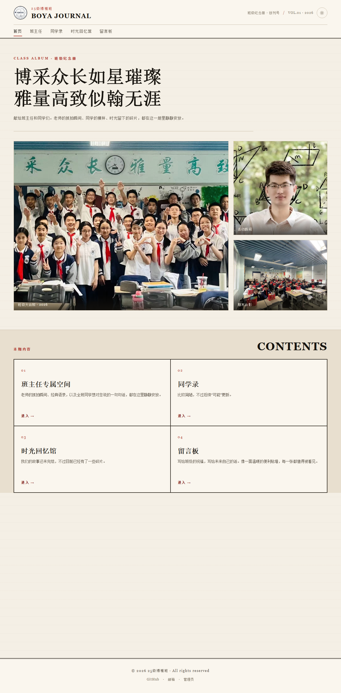
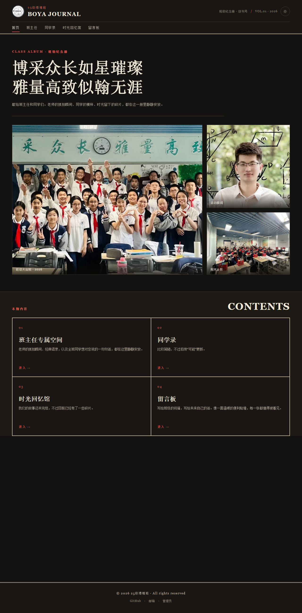
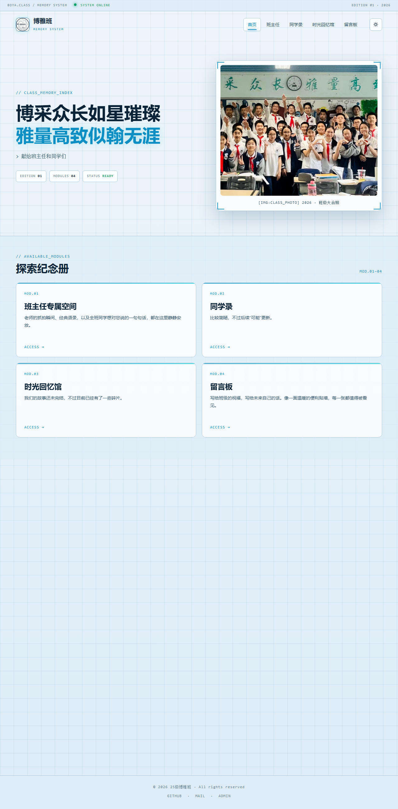
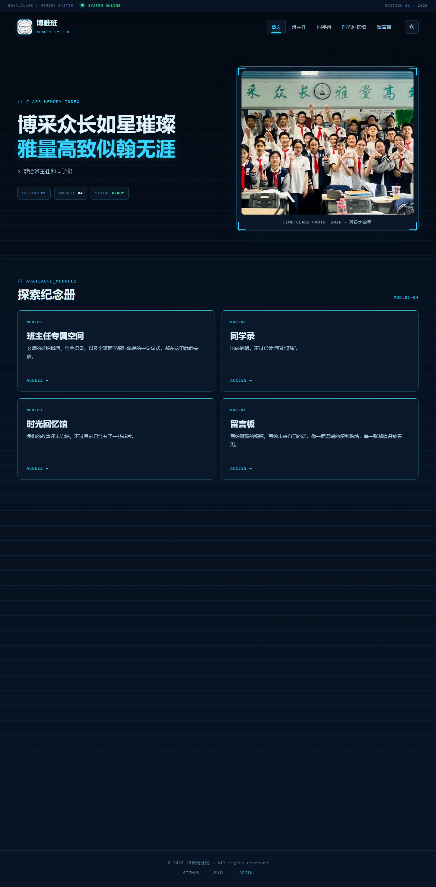
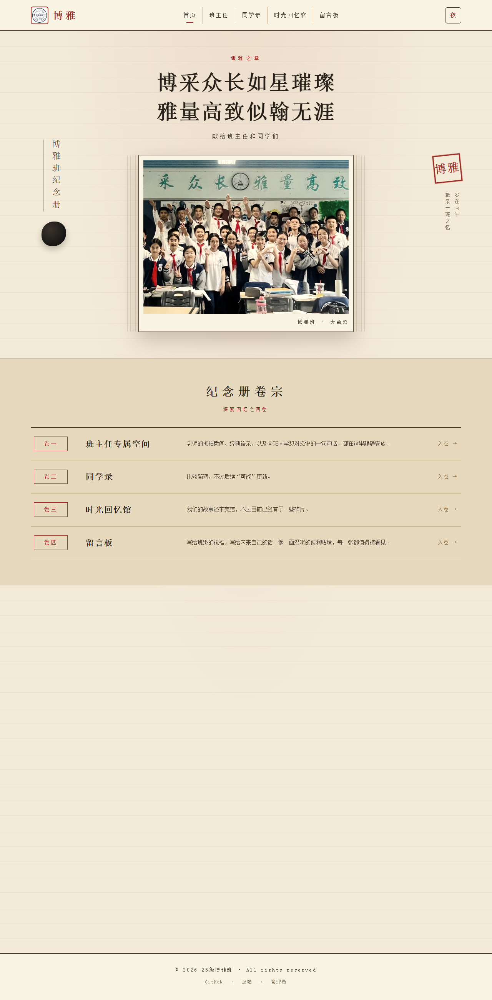
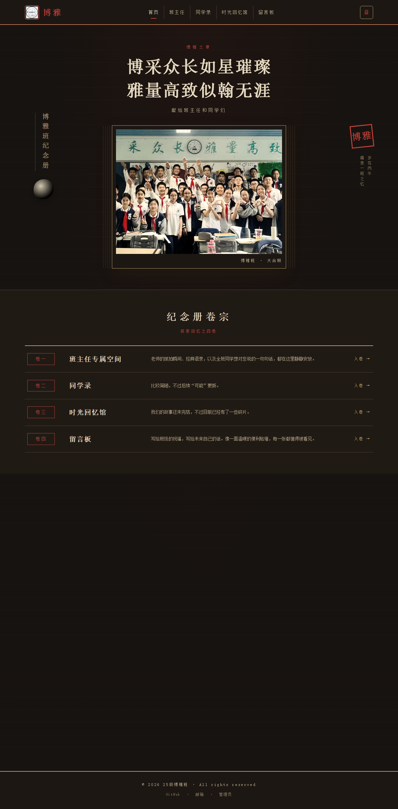
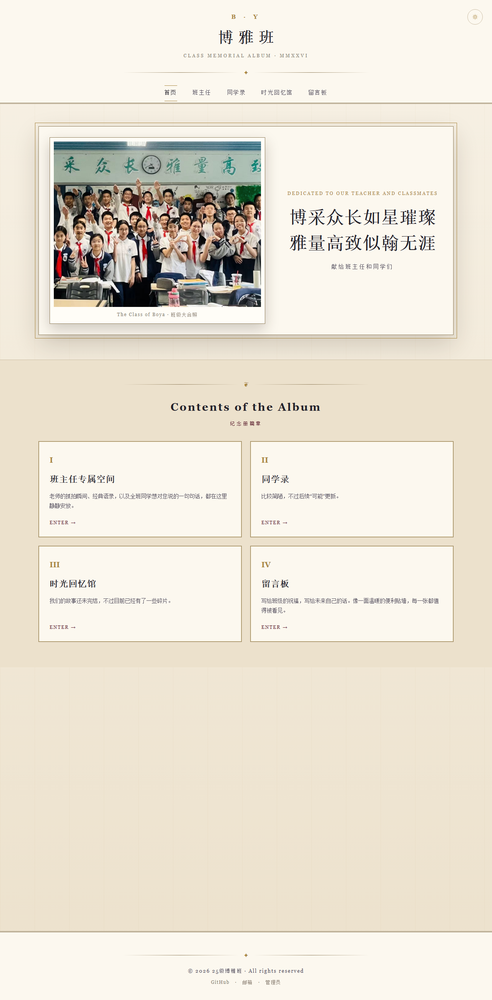
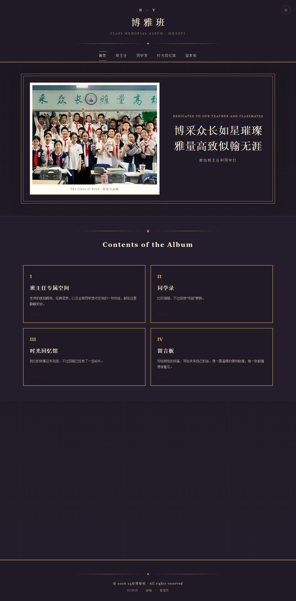
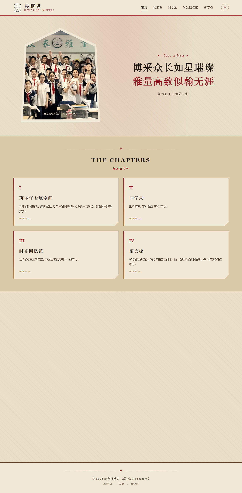
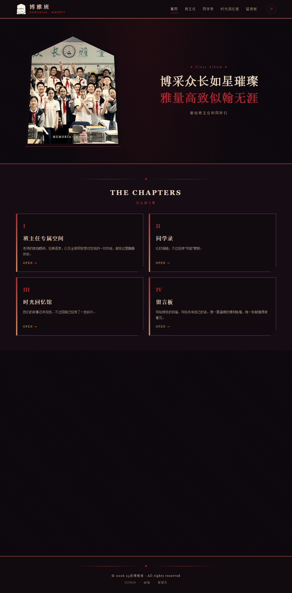

原版、哥特、科技、古风、编辑社、西方风已全部上线，站点右上角可以随时切换。
报头、杂志分栏、编号目录


状态栏、网格底纹、玻璃模块、青色光效


竖排题字、卷轴相框、红章


花押字、金线边框、画框合照、罗马数字


尖拱相框、血色 / 烛金配色


原版为站点默认外观；哥特、科技、古风、编辑社、西方风已全部上线，进入后点右上角外观按钮即可切换。浅色 / 深色模式在六种外观下都可用。